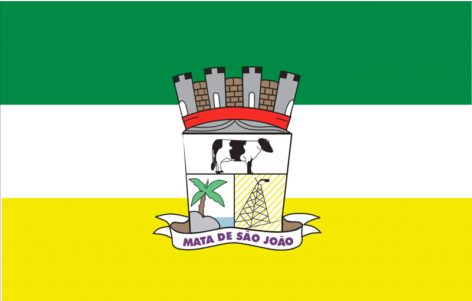

Salvador é a capital e maior cidade da Bahia. O município foi fundado em 1549 como sendo a
primeira
capital do Brasil. A sua história está vinculada à chegada dos portugueses na costa
brasileira, mais
especificamente na região da Baía de Todos os Santos, considerada estrategicamente propicia
para a
instalação de uma capital.
Clima
Clima quente úmido (com pouca chuva no verão e chuvoso no inverno e outono)
População
46.998 habitantes
História

Bandeira
Brasão
Aniversário: 15 de abril
Fundação: 15 de abril de 1846
Padroeiro (a):São João Batista
Gentílio: Matense
Cep: 48280-000
População: 46998 (estimativa)
Prefeito (a): João Gualberto Vasconcelos (PSDB)
2021 - 2024
Mata de São João é hoje o mais importante município do Litoral Norte da Bahia.
Localizado a
56 km de Salvador, o município se tornou um dos principais destinos turísticos do país,
com
suas belezas naturais e com o alto padrão dos serviços prestados que reúne resorts,
luxuosas
pousadas e restaurantes de todas as nacionalidades. A história de constituição da cidade
marca o processo de formação nacional e, principalmente, do Nordeste brasileiro. Quem
visita
o município e conhece o patrimônio artístico-cultural e material, preservados ao longo
dos
anos, relembra parte da história da constituição desse país tropical chamado Brasil.
Em 1549, a comitiva de Tomé de Souza chegou à Bahia e trouxe Garcia de Souza D`Ávila, ou
Garcia D`Ávila. Foi ele quem, em 1551, no ponto mais alto do litoral baiano, enseada de
Tatuapara, hoje conhecido como Praia do Forte, construiu a fortaleza estratégica da Casa
da
Torre, ou Castelo Garcia D’Ávila, de grande importância para a colônia que vinha se
formando
a partir de Salvador.
Da Casa da Torre, fiscalizava-se o movimento de embarcações que se aproximavam do Porto
da
Bahia. A localização estratégica tornou o castelo fundamental nas lutas pela
independência e
na defesa territorial do Estado. Acredita-se que foi do posto de observação da Casa da
Torre
que surgiu o primeiro sistema de comunicação da América, já que eles tiveram que
desenvolver
uma maneira de comunicar a Salvador, que ficava a 80 km, a presença de uma nau inimiga.
O Castelo foi a sede do maior latifúndio das américas, com 800.000 Km², da Bahia ao
Maranhão, com fazendas de plantio de côco e criação de gado. As obras de construção do
Castelo só foram concluídas em 1624, 73 anos depois. Hoje ainda se pode encontrar em
Mata de
São João as ruínas deste patrimônio arquitetônico e histórico, um exemplar único em
estilo
arquitetônico medieval nas Américas.
Conta-se que Mata de São João, durante muitos anos, teve o nome de São João da Mata,
sendo
depois denominada de Mata de São João graças a João Lopo de Mesquita, que devastou matas
e
abriu estradas entre 1649 e 1659. Os nortistas pregavam: “vamos trabalhar nas matas de
seu
João”. E então o nome Mata de São João foi registrado oficialmente em 1846, quando o
povoado
foi elevado à categoria de Vila. As terras que hoje lhe pertencem eram no séc. XVIII
parte
dos municípios de Água Fria e Espírito Santo de Nova Abrantes, originários de missões
jesuítas.
Contam que a cidade é marcada por algumas curiosidades. Foi em Mata de São João por
exemplo
que foi plantado no séc. XVI um dos cinco primeiros pés de coco-da-baía do Brasil. Além
disso, Mata já teve a honra de receber Dom Pedro II e a família real, que veio pela
estrada
férrea Leste Brasileiro. E foi lá que aconteceu, em 1845, uma das primeiras
manifestações do
espiritismo no mundo.
Hino
Sou Mata de São João
Município que mais avança
A força da educação
O verde da esperança
Com fé e seriedade
Avante vamos brilhar
Sou mata sou liberdade
Meu lema é avançar
Sou a flora, sou a prata, sou os rios
Os desafios hei de vencer
Sou matense me orgulho, tenho brio
Aqui nasci quero crescer
Amado Bahia, JK de tantas riquezas,
Imbassaí, Praia do Forte que beleza!
Diogo e Sauípe do meu coração
Oh! Linda Mata de São João!
Se você não sabe eu venho
Dos tempos do jesuítas
De um castelo tão belo
Jacupema ave bonita.
Fui arraial do Bonfim
De vila passei a cidade
Sou nobre quero mostrar
A minha hospitalidade
Sou a flora, sou a praia sou os rios
Os desafios hei de vencer
Sou matense me orgulho, tenho brio
Aqui nasci, quero crescer
Amado Bahia, JK de tantas riquezas,
Imbassaí, Praia do Forte que beleza,
Diogo e Sauípe do meu coração
Oh! Linda Mata de São João.
Cultura
Além de uma natureza exuberante, o nosso município preserva um diversificado patrimônio
material que revela a historia de formação da cidade e do nosso povo, apresenta as
nossas
tradições e enriquece o nosso município. Conheça agora alguns deles.
- Casa da Cultura
De arquitetura colonial, no século passado, foi o maior mercado popular do município.
Hoje, é um espaço cultural destinado a apresentações artísticas, conferências,
exposições,
com capacidade para 365 pessoas.3
- Castelo Garcia D’Ávila
Esta é a única construção das Américas com características medievais. Erguido em 1551,
por
Garcia D’Ávila, o castelo foi tombado pelo IPHAN e faz parte do Parque Histórico e
Cultural,
que reúne o Sítio Arqueológico e o Centro de Visitação.
- Matadouro
É um dos símbolos de um período próspero do município. Na década de 40, Mata de São João
abastecia o mercado de carne da capital com a intensa atividade do matadouro, onde
animais
eram abatidos no local e comercializados.
- Igreja Matriz
Igreja do padroeiro da cidade, São João Batista. Começou a ser construída em 1901 e só
foi
concluída 28 anos depois. De arquitetura simples e moderna, o templo preserva algumas
imagens sacras portuguesas.
- Biblioteca Municipal Álvaro Pina Trindade
A Biblioteca Álvaro Pina Trindade, inaugurada em 2015, é espaço moderno e estruturado
para
receber pessoas de diversas idades em ambientes climatizados, capazes de oferecer um
mundo
de possibilidades. São 5 mil novos livros para os munícipes, sala de informática,
laboratório de ciências, sala de empréstimo e tantos outros espaços.
- Igreja do Bonfim
A basílica do Bonfim é símbolo de uma das maiores devoções de Mata de São João.
Construída
em 1761, o templo é resultado de uma promessa de Teodósio de Farias que sobreviveu a uma
tempestade no mar.
- Igreja de Praia do Forte
Um dos pontos mais charmosos da vila de pescadores. Foi construída pelos nativos em 1900
e
guarda obras do artista plástico Carlos Bastos, que retratam um pouco da cultura baiana.
Geografia
Município de grande extensão territorial é privilegiado pelo clima e vegetação. As
belezas
naturais são a vitrine do município que atrai gente de todas as cores, diferentes
sotaques e
locais. É uma pequena amostra desse país chamado Brasil.
Coordenadas geográficas: 12º31’46” de latitude sul e 38º17’59” de latitude oeste
Área da unidade territorial: 633,198km²
Clima
Climatologia: Clima quente úmido (com pouca chuva no verão e chuvoso no inverno e
outono)
Bioma: Mata Atlântica
Recursos hídricos: A área do estudo pertence a bacia do rio Jacuípe, que margeia
a
área
urbana da sua sede municipal. O rio Jacuípe é de regime permanente e suas águas são
consideradas de boa qualidade.
Solo: Os solos são derivados de material sedimentar característico das formações
geológicas
regionais sendo friáveis, profundos, de cor amarelada, com pouca matéria orgânica, de
natureza argilosa e arena – argilosa onde se destacam os podzólicos vermelho-amarelos.
Estes
tipos de solos são minerais hidromórficos, de textura média e argilosa.
Vegetação: A paisagem está modelada em tabuleiros na porção interiorana e a
planície
litorânea na orla municipal. Recobre este modelado de a vegetação de floresta
estacional,
restingas e manguezais, pertencentes ao domínio da Mata Atlântica.
Turismo
Mata de São João, um pequeno paraíso tropical do Litoral Norte da Bahia (Costa dos
Coqueiros), conhecido no mundo inteiro pela beleza de suas praias, pela natureza
exuberante
e pela simpatia e hospitalidade do seu povo. São 28 km de litoral e reservas naturais.
Praia do Forte, Imbassaí, Diogo, Santo Antônio e Sauípe compõem o cenário que une a
simplicidade de vilarejos à sofisticação das grandes redes de hotéis do mundo, que une o
tempero da Bahia à culinária de diversas nacionalidades.
Mata de São João é um município singular e plural, que surpreende e encanta com suas
belas
paisagens e genuínas manifestações culturais. Tradições do nosso povo, passadas de
geração
em geração e que Mata de São João faz questão de apresentar a você.